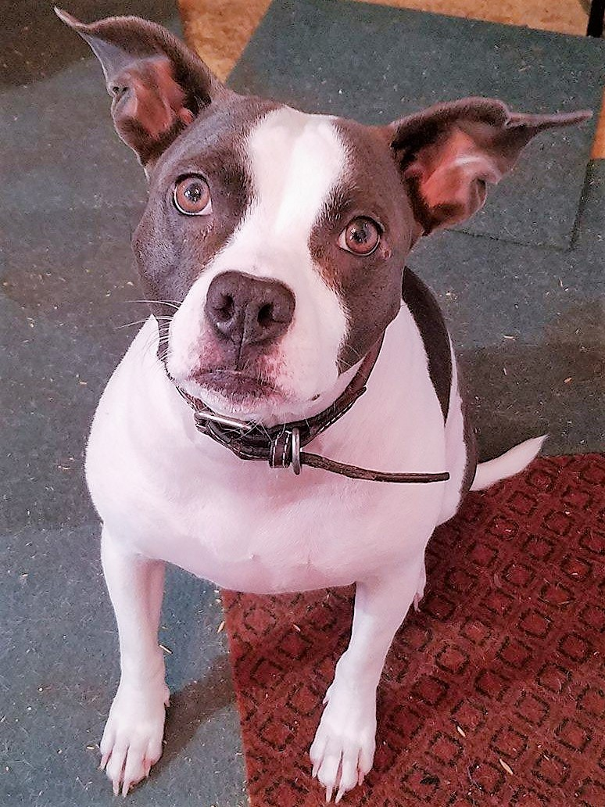
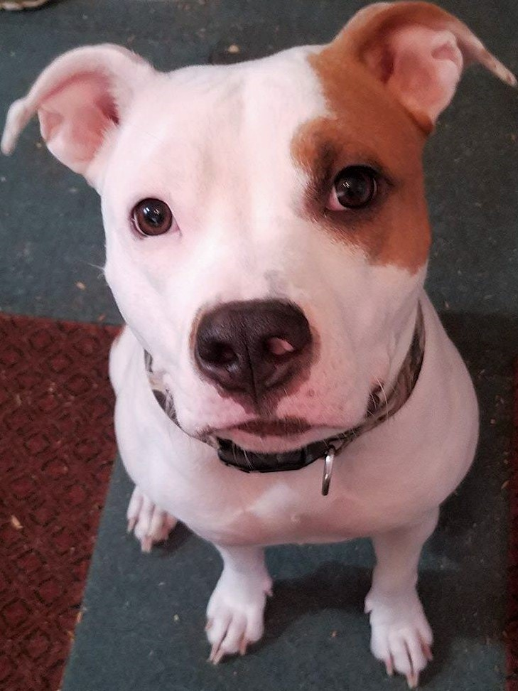

Pit bulls are a very misunderstood breed. This site was inteded to clear up some of the bad things people think about the breed.
To understand the pit bull,(American Pit bull Terrier)we have to know where they come from. In the UK these dogs were bred from bull dogs and terriers. They were used for baiting game animals, such as bears and wild hogs. Unfortunately, some people used the dogs as a blood sport and let the dogs fight to the death. Which is one reason most people have a grudge against the breed.
I have two pit bulls, who are the most loveable, most loyal dogs I have ever owned. The first pit that we got was sort of a rescue. The person we got her from didn't want her. Once we obtained the dog, we soon noticed why. The dog's name is, Baby Girl. She was very sick with symptoms of parvo. We took her in and gave her all the love we could give, and nursed her to a healthy state. Since she was very sick as a puppy, her growth was stunted. So she is about half the size of a full grown pit bull. We call her the "Pocket Pit".
The second pit bull was also sort of a rescue. We were told that the dog was defective, and if someone didn't take her she would be put down. We made arrangements to secure the god's safety. We took her to a vet for a check-up, and come to find out, she had a broken leg. This dog's name is, Trinity. She has since shed the cast from the broken leg. She is healthy as can be.
Pit bulls come in a variety of different breeds, colors, sizes. Aside from the, "American Pit Bull Terrier", here is a list of other breeds that fit under the unbrella of "pit bull".